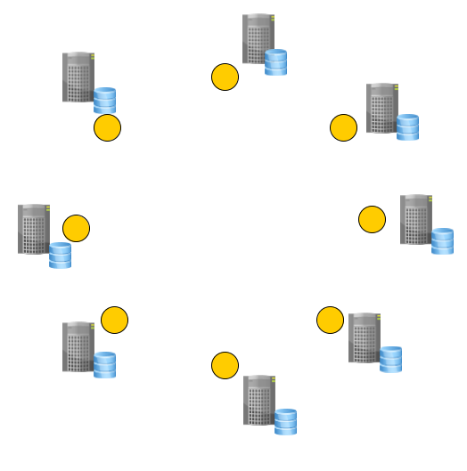

Primera Revolución
1951: Magnetic Tape
1955: Magnetic Disk
1965: ISAM
1965: Modelo Jerárquico (IBM IMS)
1969: Modelo de Red (IDMS Mainframes)
Segunda Revolución
1970: Codd's Paper
1974: System R
1978: Oracle
1981: Informix
1984: DB2
1987: Sysbase
1989: SQL Server
1990: OODBMS (Non Relational)
1995: MySQL
1995: PostgreSQL
Tercera Revolución
2005: Hadoop / Google Big Table
2007: Dynamo (Amazon)
2008: Cassandra (Facebook)
2009: MongoDB
2010: VoltDB
... muchas mas en nosql.org
Trabajaba en IBM cuando escribió y publico su trabajo sobre el modelo relacional. ¿Saben que BD tiene IBM en el mercado?
IBM no quizo implementar el modelo de Cood.
¿Saben cual es la BD con más éxito en el mercado?
Larry Ellison diseño e implementó su Base de Datos basándose en las ideas de Codd. ¿Cual es la empresa de Larry?
El Modelo Relacional
El Modelo Relacional describe como los datos deben ser presentados a los usuarios, en lugar de como deben ser persistidos.
Tuplas, Relaciones (Tablas), Restricciones, un lenguaje de consulta SQL.
Las formas normales definen el buen diseño.
Jim Gray (IBM) agrega al trabajo de Cood las transacciones ACID.
Tercera Revolución
NoSQL
¿Qué generó su aparición?
NoSQL
¿Qué generó su aparición?
Entre 1995 y 2005 Internet fue transformándose... partiendo desde conexiones dial-up, utilizadas mas que nada por “curiosos” hacia el sistema de comunicación mas importante de nuestra civilización.
NoSQL
¿Qué generó su aparición?
Hoy Google procesa 40.000 búsquedas por segundo en promedio, que se traduce en 3.5 billones por día.
En 1999 le llevó un mes a Google obtener (crawl) e indexar 50 millones de páginas web.
En 2012 le llevo menos de 1 minuto la misma tarea.
NoSQL
¿Qué generó su aparición?
Amazon necesitaba procesar 35 ordenes de compra por segundo.
Facebook, Twitter y otras redes sociales tuvieron que lidear también con un número altísimo de demanda.
Aplicaciones "Planet Size"
Google, Amazon, Facebook, Twitter, y otras son denominadas aplicaciones "Planet Size".
También se las denomina "Web Scale".
Son aplicaciones de escala mundial, con altísima demanda.
Su demanda es Tan alta... pero TAN ALTA... que no es posible hostear su base de datos en un único servidor, por mas grande que éste fuera.
Aplicaciones "Planet Size"
¿entonces? Un único server no caminaba... ¿que hicieron?
Distribuyeron la carga en varios servers (segun la demanda cerca de 100).
Cluster: Varias máquinas conectadas entre sí que funcionan como si fueran solo una.
¿Y esto lo podían hacer con una BD relacional?
Distribuir una BD Relacional
Las BDs relacionales NO fueron diseñadas para escalar al nivel requerido por las aplicaciones "Planet Size".
Todas sus características fuertes van en contra de distribuir los datos en más de un único server.
Veamos algunos ejemplos.
Distribuir una BD Relacional
Pensemos que estamos en un cluster con n número de máquinas.
Consistencia: Todos los servers deben estar idénticos, si escribo en uno debo replicarlo en el otro y no puedo devolver el control al cliente hasta que todos los servers en el cluster esten iguales.
Transacciones: imagínense arrancando una transacción y teniendo que bloquear tablas que estan en otro server.
La red del cluster y su latencia hace que esto sea impracticable. Muy lento sería.
Distribuir una BD Relacional
Todas estas cuestiones hacen que las BDs relacionales solo puedan hostearse en un único server.
¿Queremos soportar aplicaciones Planet Size?
Entonces no tenemos opción, tenemos que relajar estas cuestiones (sobre todo la consistencia) para poder distribuír.
NoSQL: Arquitectura Típica

Relajaron la consistencia, para poder distribuir y tener Disponibilidad!
La consistencia en NoSQL es Eventual: Eventual Consistency
Teorema de CAP
CAP = Consistency, Availability, Partition Tolerance
No puedo ser las tres a la vez. Solo puedo ser CP o AP.
Supongamos dos nodos conetados vía red...
Si quiero ser consistente, al modificar un dato en un nodo, se debe bloquear ese dato en todos los nodos hasta tanto todos tenga en el mismo valor.
Supongamos que hay una corte en la red...
Si los mensajes no pueden viajar de un nodo al otro y se produce el escenario donde un usuario escribe en un server y otro usuario intenta leer el mismo dato del otro server, entonces tengo dos opciones: le devuelvo al usuario el dato viejo, no soy consistente pero si tengo disponibilidad o hago esperar al usuario hasta que el dato nuevo pueda llegar, entonces soy consistente pero no tengo disponibilidad.
NoSQL
Hoy es una movida MUY grande... y se valen de otras características también:
Esquema Flexible: No tienen un esquema rígido como el relacional, es flexible (json en general).
Big Data: Al distribuir soportan Big Data (por esto Google puede indexar la web completa...).
Open Source: Y sobre HW más económico al aprovechar el cluster.
NoSQL BASE vs Relacional ACID
Basically Available: Siempre habra respuesta
Soft-State: Los datos pueden cambiar a raiz de cambios en otros nodos (eventual consistency)
Eventual Consistency: Los datos pueden cambiar a raiz de cambios en otros nodos (eventual consistency)
Esto para competirle al ACID del mundo relacional... :)
Consistencia vs Disponibilidad
Las BDs relacionales favorecen la consistencia por sobre otro atributo.
Las BDs NoSQL favorecen la disponibilidad por sobre la consistencia.
Las BDs NoSQL ofrecen Consistencia Eventual.
NoSQL: ¿Y que significa?
NoSQL: Not Only SQL
nosql-database.org: Next Generation Databases mostly addressing some of the points: being non-relational, distributed, open-source and horizontally scalable.
Noten que quienes las inventaron son Google y Amazon, simplemente porque sino su negocio no prosperaba.